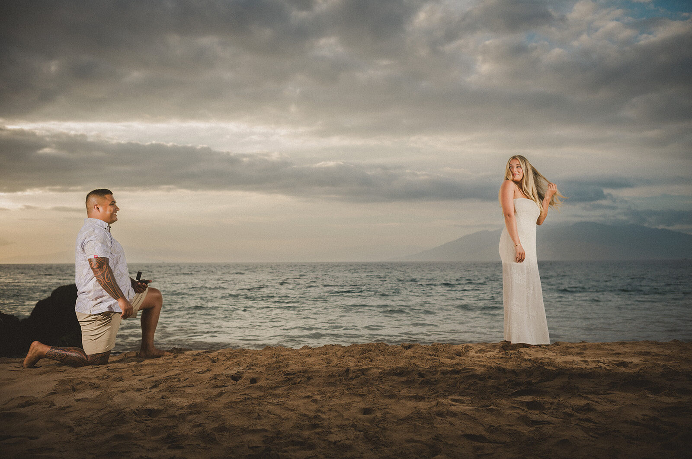
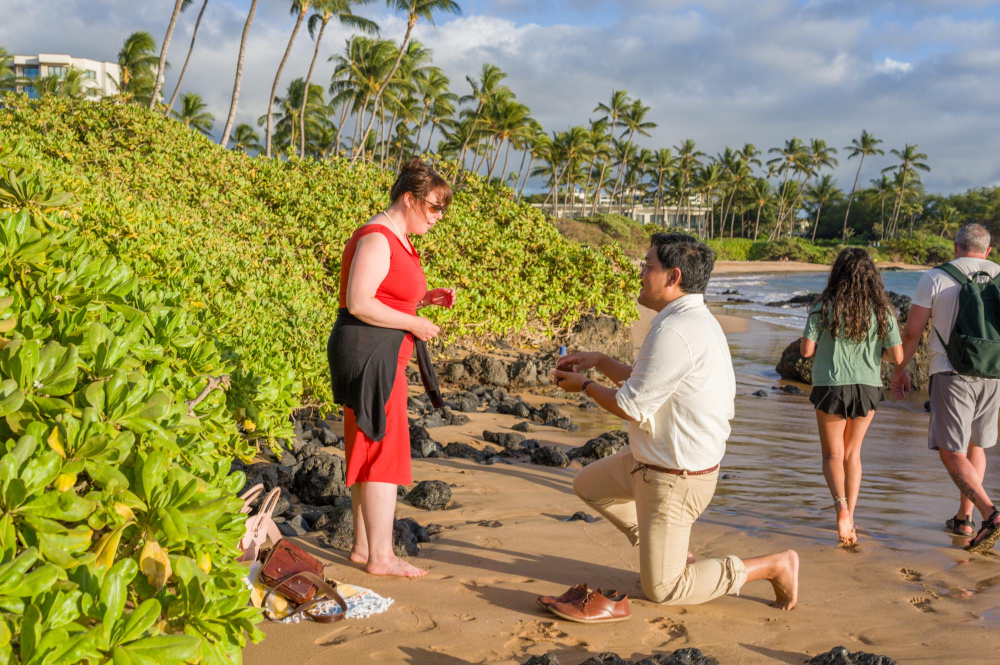
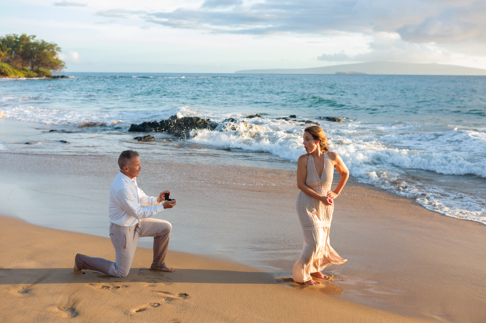
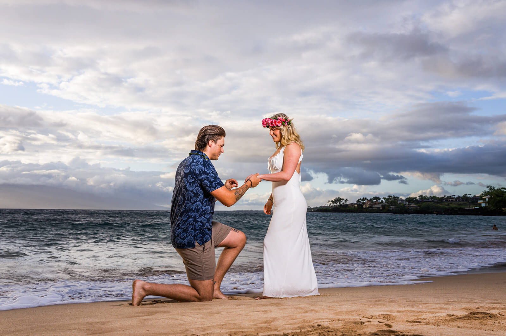

Position
Nervous proposers often stop wherever the moment feels right, even when their back, body or ring blocks the camera.

The Maui Atlas · Proposals
The reaction should be spontaneous. The photograph should not be left to chance.
The short answer
We receive many requests for a photographer who will hide nearby and capture the instant someone drops to one knee. It sounds wonderfully candid. On a public beach, it is also remarkably unpredictable.
Most people are understandably nervous. They arrive thinking about the ring, the words they hope to remember and the answer they hope to hear. In that moment, they rarely notice where they are standing, which direction they are facing or who is walking behind them.
A hidden photographer cannot quietly correct any of it. The proposer may kneel in shadow, turn away from the camera or block the ring entirely. And somehow, a tourist seems destined to cross the frame at precisely the wrong second.
Our alternative is a small surprise skit. Your partner never knows a proposal is coming. We simply create a believable reason to place both of you in beautiful light, in a carefully chosen position, before the moment begins.
What chance can spoil
The emotion happens only once. On a public beach, a purely hidden approach gives the photographer no way to protect the elements that make that instant readable in a photograph.
Nervous proposers often stop wherever the moment feels right, even when their back, body or ring blocks the camera.
A few feet can be the difference between open, flattering light and deep shadow across both faces.
Maui beaches are public. Swimmers, walkers and umbrellas can enter the background during the one second that matters most.
If the box faces the proposer instead of the camera, the photograph may record a beautiful reaction but not what caused it.
From the field · Last night
The proposer specifically wanted us hidden. At the decisive moment, two visitors walked directly through the background.
They did nothing wrong. This is a public Maui beach, and they had no reason to know that a proposal was unfolding behind them. The problem was not the people—it was a plan that depended on strangers noticing an invisible photographer and an unannounced moment.
We still recorded the proposal, the ring and the genuine reaction. But the photograph also records the exact risk we try to explain beforehand: when we cannot establish the couple’s position or quietly manage the frame, chance becomes part of the composition.

“We are not staging the answer. We are preparing the place where the real answer will happen.”Laurence Balter · Wailea Photo
The Wailea Photo approach
The sequence feels casual to your partner, but every beat has a purpose. It gives us time to test the frame, settle both of you into the setting and make the proposal feel unhurried.
Plan a sunset walk on the beach before your dinner reservation. You have heard that this is a beautiful place to stroll and perhaps take a quick phone picture while you are both nicely dressed. The explanation is simple because it is true.
I will approach you casually and offer to make a few portraits because my scheduled clients did not arrive.
We begin with several relaxed photographs. This makes the encounter believable, gives your partner time to become comfortable and lets us confirm the exact light, background and position before the proposal.
Please send us a meaningful song in advance. I will begin playing it as I pose the two of you back to back. Your partner will be listening to us and thinking about the photograph—not watching what you are doing.
When you feel a tap on your shoulder, take one step back and lower yourself onto one knee. We will keep your partner distracted for those few seconds, then guide them to turn around.
Once your partner turns, forget about us. Speak to them, take your time and allow the reaction to unfold. We have already done the technical work; now there is nothing left for you to perform.
Behind the scenes · A real proposal
Your partner sees a photographer making a few friendly portraits. Behind them, the proposal is already beginning.
In this unedited behind-the-scenes sequence, the photographer holds one partner’s attention while the proposer creates space, removes the ring and lowers onto one knee. The ocean, horizon and couple are already aligned. When she turns, the surprise is entirely hers—but the photograph is ready for it.
The video has no audio by design. The words, song and reaction belong to the couple.
The finished photographs
These photographs come from different Maui proposals, but they share the same fundamentals: a clean horizon, flattering light, room for the reaction and a ring presented where the camera can see it.


Preparation does not make a proposal less authentic. It simply removes avoidable distractions so the photographs can hold what was authentic—the disbelief, the laughter, the tears and the first quiet minutes after the answer.
One small detail
After you kneel, angle the open ring box slightly toward us.
It is a tiny movement, not a theatrical pose. You will still be looking at your partner, but the ring—the visual heart of the story—will remain visible in the frame. Then stay down for a moment. Let them see it, understand what is happening and respond in their own time.
Before the evening
Send a current picture of the two of you and describe what you will be wearing so we recognize you without hesitation.
Choose one meaningful song and provide the exact artist and version. It becomes part of the memory without revealing the plan.
Leave enough time to enjoy the proposal and the portraits afterward without watching the clock or rushing to dinner.
Keep your phone available and discreetly check for a final message in case weather, parking or beach conditions require a small adjustment.
Carry the ring where it cannot fall out, but where you can remove it smoothly while your partner is facing away.
Do not over-explain. A beautiful beach before dinner is reason enough. The least complicated story is usually the most convincing.
Good to know
Yes. Only you and the photographer know the plan. Your partner experiences a genuine surprise. We are controlling the setting, not the emotion.
No one can guarantee an empty public beach. We select and monitor a clear working area, test alternate angles and adjust discreetly without restricting lawful public access.
The opening offer is intentionally easy to decline. If that happens, we move to the backup plan agreed upon with you in advance. We never pressure or embarrass your partner.
We keep the sequence calm and simple. The tap on your shoulder is unmistakable, and we position you so one step back places you exactly where you need to be.
Yes. Once the surprise has settled, we create a short engagement portrait session while the light is still beautiful. Those photographs often become as meaningful as the proposal itself.
We monitor Maui’s local conditions and communicate with you discreetly. A small timing or location adjustment is sometimes all that is needed; dramatic skies can also produce extraordinary photographs.

Your question. Their surprise.
Tell us what you are imagining, your preferred date and the story you want the evening to tell.
Plan a Maui proposal